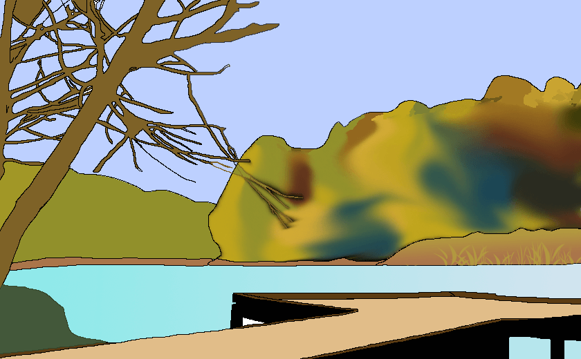

Гуральня
Озеро "Гуральня" знаходиться у в 5 кілометрах від Вінниці на об'їздному шосе на Калинівку, траса М12, E50. Саме озеро оточено великою кількістю дерев, що робить це місце прекрасним для відпочинку, люди приходять сюди не тільки для вилову риби, а й для того щоб провести вільний час на природі.
Способи ловлі
На водоймі можна як ловити рибу з берега, так і на човні.
Риба
На водоймі "Гуральня" водиться: Карась, Плітка, Щука, Окунь, Товстолоб, Короп.
Дозволені снасті
Дозволено використовувати будь-які снасті, окрім тих, що вважаються браконьєрськими (електровудочки, вибухові речовини, сітки).
Глибина
Глибина на водоймі досягає 3 метрів.
Обмеження на вилов риби
На водоймі відсутні обмеження вилову риби.